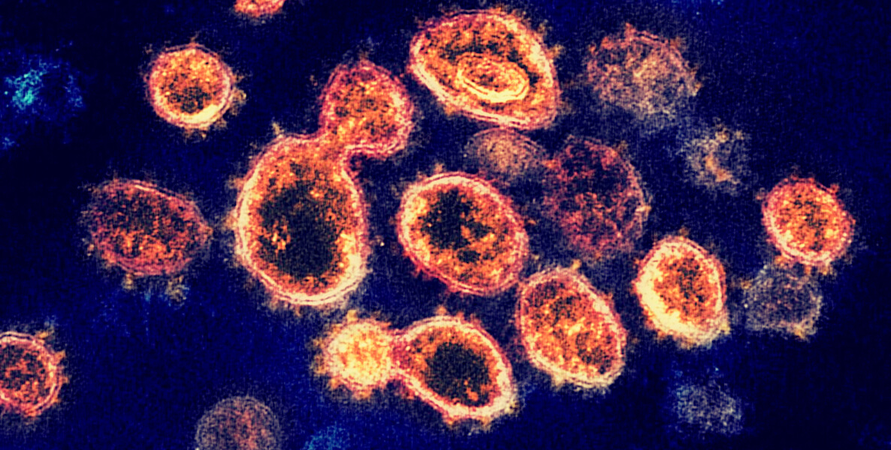
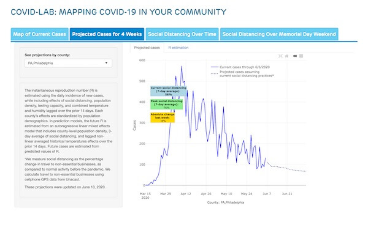
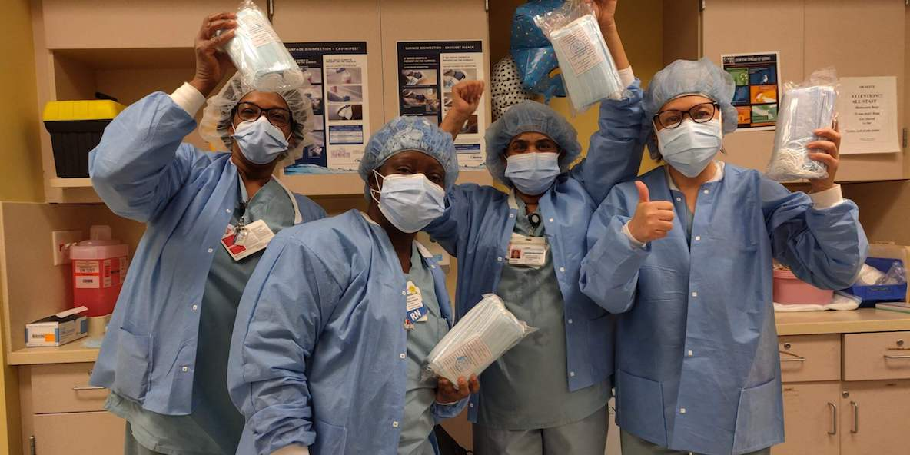
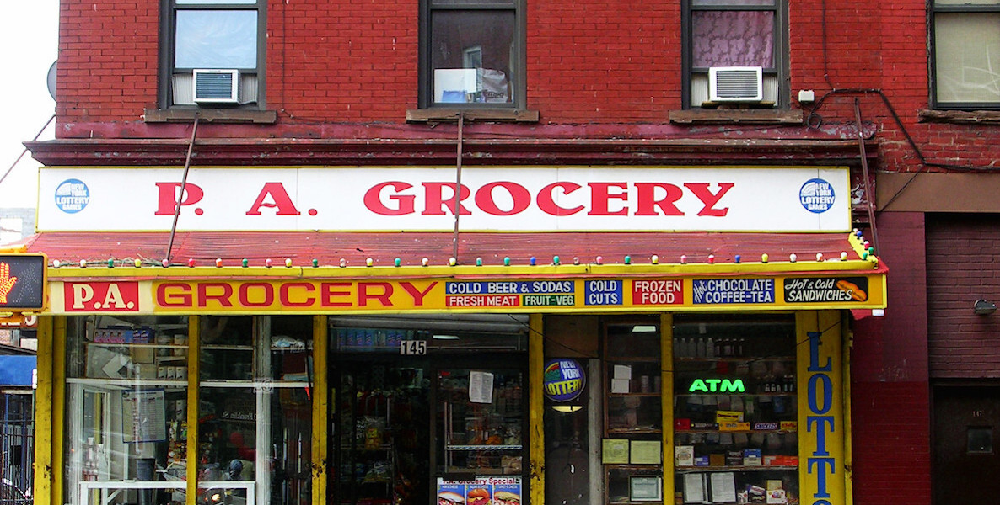
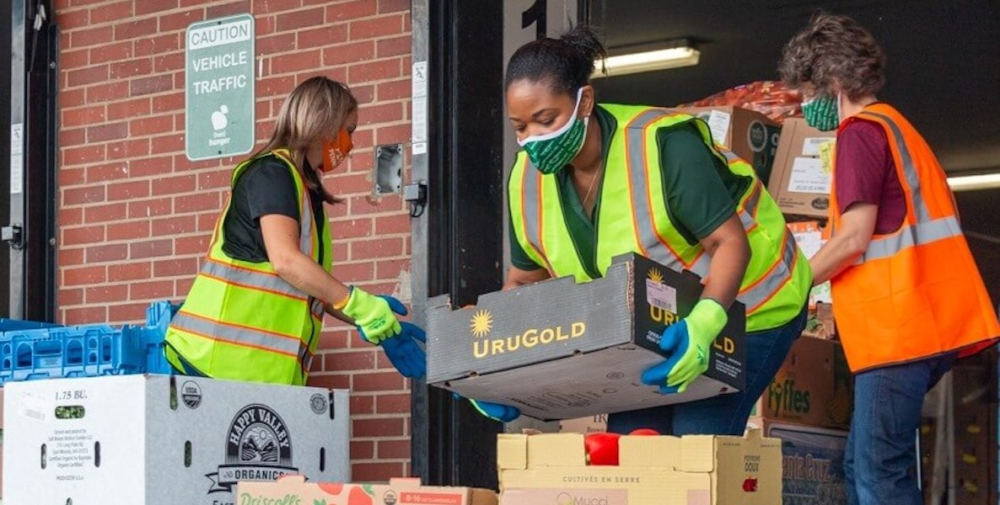
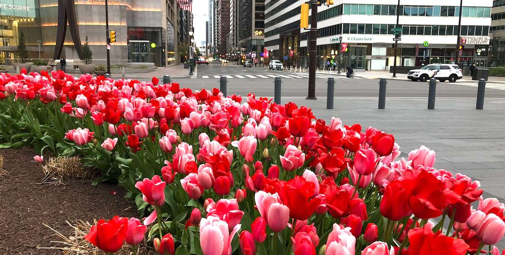
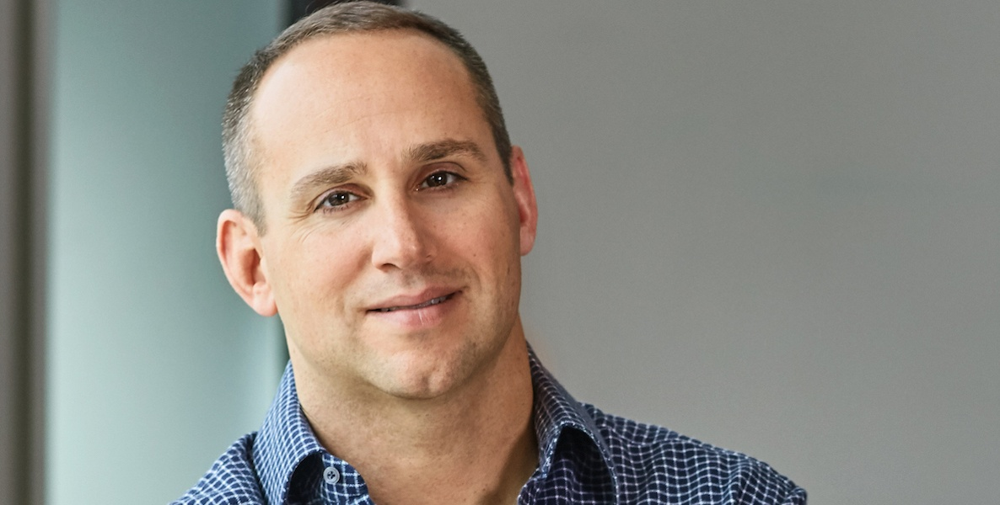
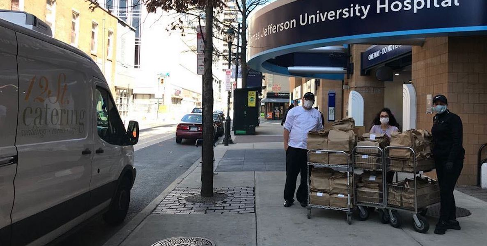
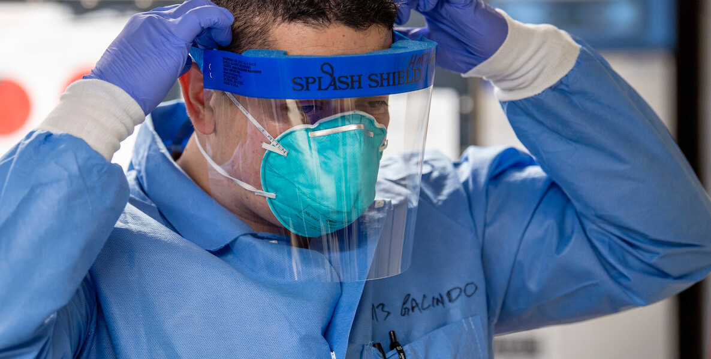

CHOP and the Virus
Last month, just before Memorial Day, headlines blared of a new study warning of a second coronavirus wave, particularly throughout the South, as the rush to reopen local economies took off.
There, on CNN and in the pages of The Washington Post, was Dr.David Rubin, director of PolicyLab at Children’s Hospital of Philadelphia, which had developed the model.
'As communities reopen, we’re starting to detect evidence of resurgence in cases in places that have overreached a bit,' he told the Post.
What he didn’t say was that CHOP’s model was unique among all the other ones media outlets had been referencing in the drive to predict the future of the pandemic.The CHOP model, you see, uses the weather to predict the future.
Think of it this way.Taking your temperature is an easy way to check whether you might be experiencing one of the symptoms of Covid-19.A reading comfortably below 100 degrees indicates you don’t have a fever.It doesn’t guarantee that you haven’t been infected with the coronavirus, but it can offer some peace of mind.
Similarly, researchers studying the spread of the virus at a macro level are using the temperature outdoors, along with humidity levels, and other geographic-specific data sets to forecast the likely prevalence of infections in particular areas.
'If we are fortunate to see that widespread transmission has not followed [protests], it will add additional evidence that the risk for SARS-CoV-2 spread outdoors under conditions of increased heat and humidity remains small,' the CHOP team said recently.'If not, we may need to recalibrate our response.'
Using historic weather data, PolicyLab has developed a tool that researchers claim has fairly accurately tracked incidences of Covid-19 cases.The tool also takes into account a county’s demographics, population density, and real-time data on the amount of social-distancing practiced there—using GPS cell phone data.
'There’s a complex relationship between temperature and the transmission of the disease,' says Dr.Gregory Tasian, a professor of urology and epidemiology at the University of Pennsylvania Perelman School of Medicine who is working on the forecasting model.'It’s a very non-linear relationship.'
Tasian has a background in studying temperature’s impact on health, and in discussions with Rubin and Jing Huang, a professor of biostatistics at Penn, that began in late March, they decided to build a model looking at how weather and other variables would dictate rates of transmission.
'We were brought together by a shared commitment to alter the course of the Covid-19 pandemic and save lives by informing decision-making,' says Tasian.
There has been a bumper crop of epidemiological tools aiming to predict how the pandemic that has already killed more than 100,000 Americans will progress.In Philadelphia, a group of researchers from Penn Medicine teamed up with local volunteer programmers to develop a tool that allows people from any geographic region to plug in their own data and get a sense of how many Covid hospitalizations to expect.
Tasian said he is unaware of any other models that incorporate temperature and humidity data.Also, rather than producing estimates for entire states—the way the popular University of Washington model does—CHOP focuses on 389 counties with some level of disease outbreak.
In seasonal spring weather, transmission of the virus appears to diminish—which tracks with the way other coronaviruses and flu viruses behave, according to Tasian.But as the mercury climbs higher, the virus begins to spread more rapidly again, he says.
That boomerang effect might be because droplets containing the virus land on surfaces and stay there more readily in warmer weather, or because nice weather prompts people to get out of the house and socialize more—or both.
A pre-print of a CHOP study using the data from the model indicates that the virus spreads most quickly in the coldest temperatures, and slows down as temperatures warm.At around 55 degrees, transmission begins to increase again, before dropping down once more when the weather gets hotter.
Hot temperature alone cannot eradicate the virus, and even under the blazing Texas sun the cities of Dallas and Houston have recently shown signs of an expanding outbreak.The CHOP researchers suggest that might be because of less social-distancing and less adherence to mask-wearing.
But the weather’s effect on the pandemic could be one reason why even after Florida loosened restrictions on economic activity, the Sunshine State has not experienced the major spike in coronavirus infections that many feared might occur.(In June, Florida reopened bars and movie theaters throughout much of the state, and officials there blamed a recent surge in Covid cases on all the socializing that took place during Memorial Day weekend.)
'I think weather could be a factor that could account for some of these differences that we’re seeing between Florida and other areas where it’s still a bit cooler,' says Tasian.
There are other factors that affect the spread of coronavirus, and several have been incorporated into CHOP’s model, including population density, the amount of social-distancing—and the health and well-being demographics of the population: the proportion of people over the age of 65, the proportion with diabetes, and the proportion living in poverty or just above poverty.
Perhaps the most high-tech aspect of the model is the way CHOP measures social-distancing.For that, it turns to Unacast, a corporate intelligence firm founded by two of the people who built the music streaming service Tidal.
Unacast uses GPS data to note the travel patterns of people all over, and collates that data into social-distancing scorecards.The CHOP project looks at one metric—the change in visits to non-essential locations.
By that measure, Philadelphia has scored well since the lockdowns went into effect in March with one notable exception: Friday, May 29, when visits to non-essential locations were still below normal but not as far down as they had been.
That was the day before the first big protest in Center City against systemic racism and police brutality following the police killing of George Floyd in Minneapolis.
'As communities reopen, we’re starting to detect evidence of resurgence in cases in places that have overreached a bit,' Rubin told the Post.
As big protests have become regular occurrences in American cities, along with crackdowns by police and demonstrators hauled off to jail, those events present a challenge for the CHOP team.
Tasian said the Unacast data does not measure the number of people gathering in a public place, but the forecasts would pick up any hypothetical spike in cases from those gatherings.
There is a normal lag of about two to three weeks before data showing a spike in community spread would become apparent, according to the CHOP team.That means that by around June 13 or June 20, Philadelphia should have an idea about whether the protests significantly worsened the outbreak.
'If we are fortunate to see that widespread transmission has not followed, it will add additional evidence that the risk for SARS-CoV-2 spread outdoors under conditions of increased heat and humidity remains small and make us more confident that we might find some respite this summer from the crisis we witnessed this spring,' the CHOP team wrote in a recent blog post.'If not, we may need to recalibrate our response.'
Scientists around the world have scrambled to understand the tiny virus that has killed roughly 400,000 people around the world, and more than 100,000 Americans.Because it is developing so rapidly, much of the science is still unsettled.
The safety and efficacy of hydroxychloroquine has been one of the most controversial areas of study, because President Trump embraced it as a miracle cure, even though there was practically no basis for that.
In May, a study claimed that hydroxychloroquine did the opposite—increasing the risk of death and heart problems among Covid-19 patients—but then about a week later authors of that study conceded they could 'no longer vouch for the veracity of the primary data sources,' and it was retracted.
That high-profile reversal is not representative of the good work underway in labs across the world, but it should be a reminder to maintain healthy skepticism about the latest scientific findings.
The predictions made by models are easy to judge because after enough time is passed, the public can check in and see how accurate they proved to be.Looking at Philadelphia, the CHOP model as of early June predicted a slow tapering off of new Covid-19 cases, dropping to 105 on June 30.
The researchers have been fine-tuning the CHOP model every two weeks, but Tasian said there has not been a need for any full-scale revisions in what the team uses to form the predictions.
In the future, depending on how the science progresses, the team might consider incorporating that amount of sunlight into the model along with data about the number of people who have antibodies—meaning those who have fought off the disease and may retain some immunity to it.
The Pennsylvania Department of Health is looking at the CHOP model as state leaders make decisions about how and when to reopen sectors of the economy across the state.Rubin has briefed officials across the country on the model, and worked with the State Department and other pieces of the federal government.
Depending on how widely it is used, the CHOP model could have a real bearing on how restrictions are loosened in various parts of the country.
Photo courtesy quapan / Flickr
Posted On: 2020-06-11T00:00:00
Posted By: Andy Metzger









Content Date: 2020-06-11
Download Date: 2021-04-21
Document ID: L0C04AJV1